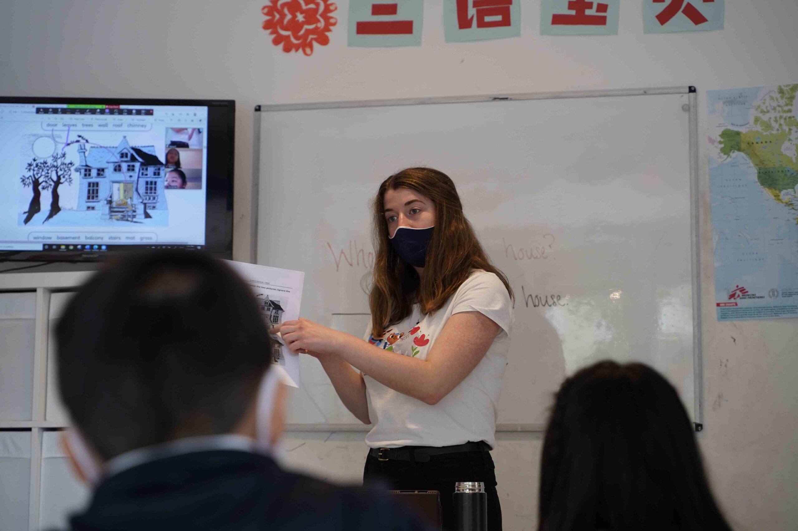
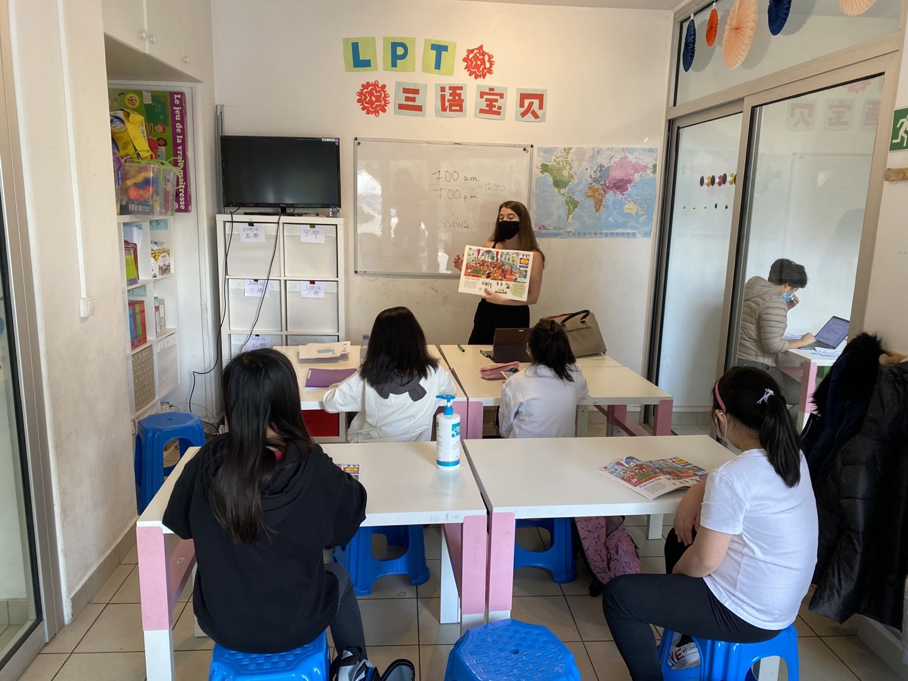
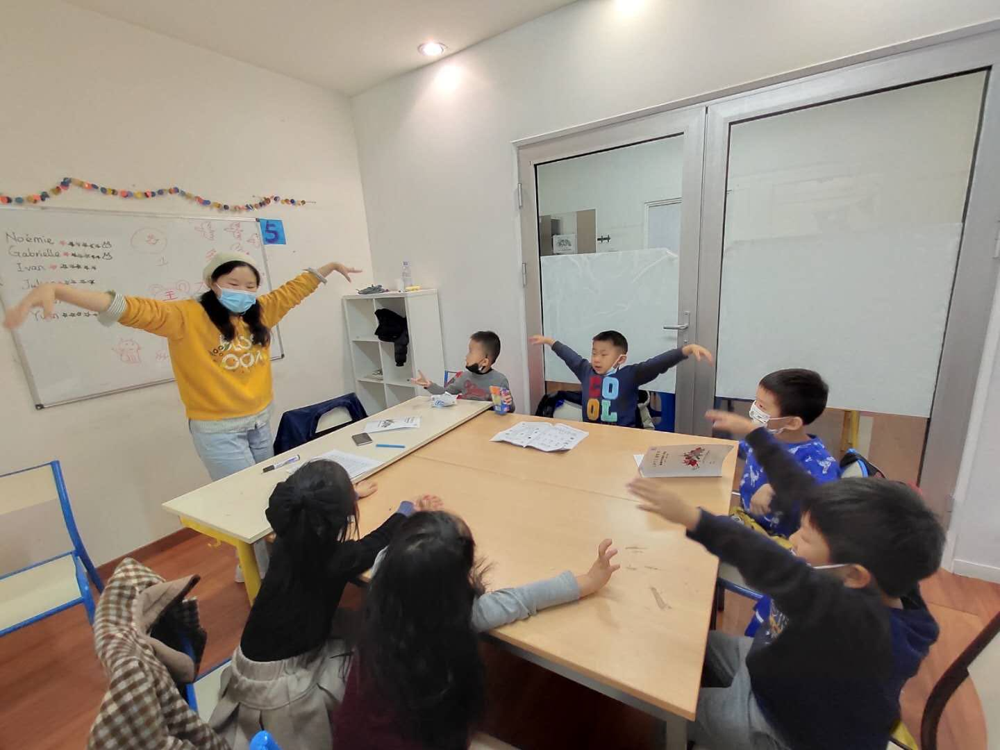
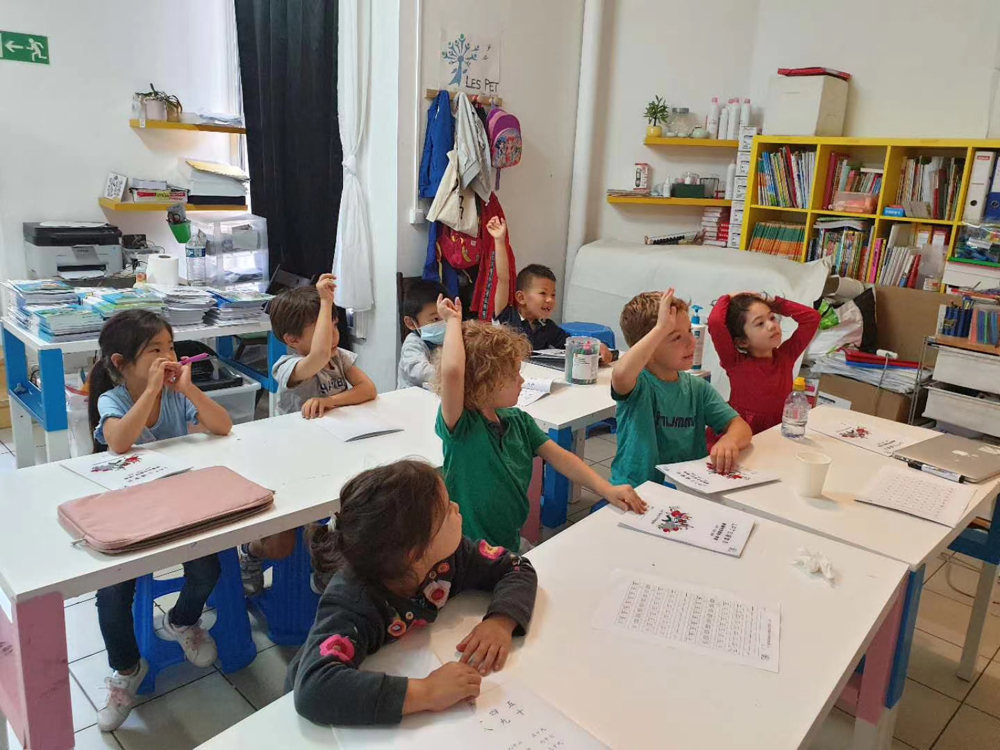
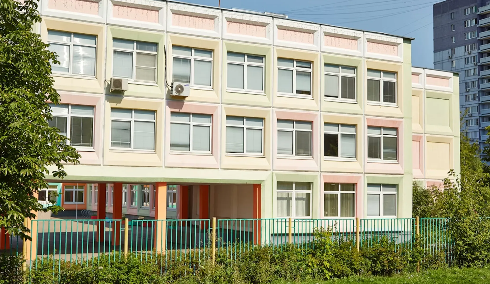
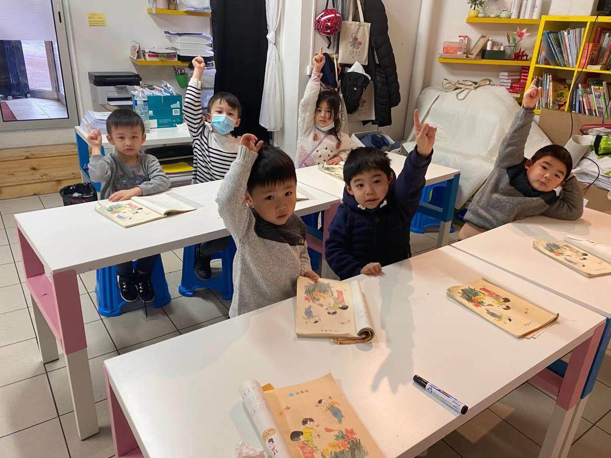
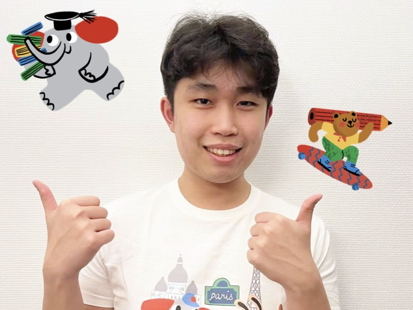
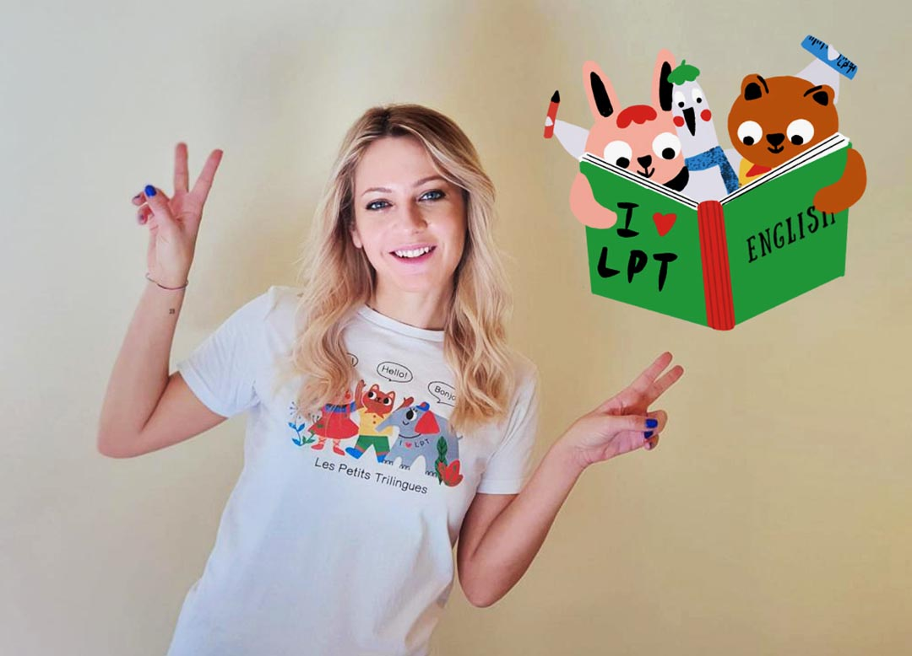
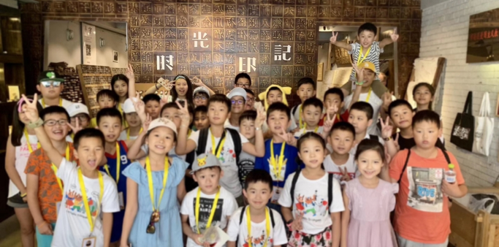

Enseignants de langue maternelle chinoise et anglaise, formés à la pédagogie des tout-petits.

Chaque enfant parle à chaque séance. Le professeur connaît chacun par son prénom.

Jeux, chansons, histoires, ateliers : la langue s'installe naturellement, sans par-cœur.

Paris, Boulogne, Antony, Aubervilliers, Bussy-Saint-Georges… toujours près de chez vous.


Nous avons créé Les Petits Trilingues avec une conviction : à cet âge, une langue ne s'apprend pas dans un manuel — elle se vit. Depuis 7 ans, plus de 1 000 familles d'Île-de-France nous confient leurs enfants chaque année.
Cours hebdomadaires et stages de vacances. Sous chaque programme : les campus où il est proposé.
Premiers mots, comptines et jeux sensoriels. L'oreille se forme à l'âge où tout s'absorbe.
Lecture, écriture des premiers caractères et vrai bagage oral, en petits groupes de niveau.
Préparation HSK et YCT, conversation et culture. Un vrai atout pour le lycée et après.
Chansons, albums et jeux de rôle avec des enseignants anglophones natifs.
Grammaire en action, expression orale et confiance à l'écrit — loin des cours magistraux.

Une semaine d'immersion ludique à chaque vacances : langue le matin, ateliers créatifs l'après-midi.

Le même rituel chaque semaine : les enfants savent où ils vont, et la langue devient une habitude heureuse.
Dès la porte, on ne parle plus français. Rituels de salutation, météo, humeur du jour.
Jeux de rôle, chansons, mimes : le vocabulaire de la semaine arrive par le corps et le jeu.
Histoire, calligraphie, bricolage ou théâtre selon l'âge — on utilise la langue pour créer.
Chaque enfant repart en montrant ce qu'il sait dire. Vous suivez les progrès semaine après semaine.
25 enseignants natifs, recrutés pour leur pédagogie autant que pour leur diplôme.

10 ans d'enseignement aux enfants, spécialiste des tout-petits.

Londonienne, formée Montessori, reine des chansons à gestes.
Prépare aux examens HSK/YCT avec un taux de réussite de 96 %.
Théâtre et projets créatifs : l'anglais qui donne confiance.
« Ma fille a commencé à 4 ans sans un mot de chinois. Trois ans plus tard, elle lit ses premières histoires toute seule. Les professeurs sont d'une patience remarquable. »
« On cherchait de l'anglais "pour de vrai", pas des dessins animés. Léo attend son cours du mercredi comme une sortie. Il chante en anglais sous la douche. »
« Le stage d'été a été le déclic. Une semaine plus tard, notre fils demandait à continuer à l'année. Le HSK 2 a été validé sans stress. »

Arts et Métiers (3ᵉ), Belleville (20ᵉ), Olympiades (13ᵉ), Boulogne-Billancourt, Antony, Aubervilliers, Bussy-Saint-Georges et Vincennes.
Années d'expérience
Professeurs natifs
Élèves par an
Campus en Île-de-France
Dès 3 ans pour le chinois, 4 ans pour l'anglais. À cet âge, tout passe par le jeu, la musique et la répétition joyeuse — aucun prérequis, aucune pression.
C'est le cas de la majorité de nos élèves en arrivant. Les groupes sont constitués par âge et par niveau : votre enfant démarre exactement là où il en est.
6 à 8 enfants maximum. C'est le seuil qui garantit que chaque enfant parle réellement à chaque séance — pas juste écoute.
Le premier cours est gratuit et sans engagement. Votre enfant rejoint un groupe de son âge, vous observez, et on fait le point ensemble à la sortie.
Les cours hebdomadaires font une pause, et nos stages ludiques prennent le relais : une semaine d'immersion, langue le matin, ateliers créatifs l'après-midi.